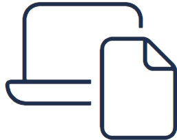
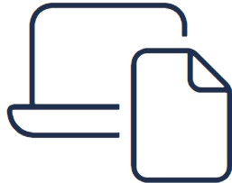

Logan McPhillips
Electrical Engineer

 logan.mcphillips777@gmail.com
logan.mcphillips777@gmail.com

 
Remote / Hybrid

Remote / Hybrid
I have a strong experience as an Electrical Engineer, with a focus on industrial automation equipment and systems. At Olin-Winchester, LCAAP, I successfully programmed and modified PLCs and vision systems, troubleshooted automation/general-electric equipment, and implemented various components such as motor drives, HMIs, servos, machine vision cameras, and industrial networks. I am also responsible for creating electrical operational procedures and schematics using AutoCAD alongside various, other engineering programs.
Outside of work, I have demonstrated technical leadership skills as a Technical Lead for my Senior Design Project, where my team and I designed a SLAM system for three similtaneous devices using Python, C++, and RobotC. I have also used my programming abilities for my position as a Research Assistant at UMKC SCE, for conducting research on Xilinx series 5 FPGAs in Java and Python. On my personal projects, I have additional experience in various projects, including setting up a home NAS, custom network-wide DNS resolution / DHCP server, implementing Docker and Virtual Machine network stacks, and an AI camera system. I have also led the UMKC GamerRoo eSports team and Fan Translators Int. projects where I coordinated activites and managed teams.
I hold a Bachelor of Science degree in Electrical and Computer Engineering from the University of Missouri - Kansas City, with a GPA of 3.4, and I currently work as an Electrical Engineer for Olin Winchester at LCAAP. I am also currently working on a CCNA certification.

Industrial Automation Equipment,
- Programming/modifying PLCs used in industrial automation,
- Experience implementing many electrical components into new or existing systems,
- Familiarity with operaitonal procedures and schematics
Computer Language
- Programming using Python, C++, C#, RobotC, and Ladder Logic
- Modeling and creating schematics and electrical solutions using AutoCAD and related software
Networking
- Created home NAS, DNS/DHCP server, NGINX reverse proxy for this website
- Implementation of Docker, Linux, and Virtual Machines

 Technical Leadership
Technical Leadership
- Coordinated meetings and delegated tasks for SLAM and FTI
Problem Solving
- Ability to troubleshoot and implement solutions for industrial automation equipment and homelab
- Ability to find root cause for recurring, seemingly unrelated problems
Collaboration
- Ability to effectively communicate with end customers, engineers, colleagues, and general public
- Regularly providing reports to project managers or leaders
Project Management
- Experience in handling multiple projects simultaneously
- Ability to coordinate meetings, delegate tasks, and manage teams
Curiosity and Time Management
- Strong curiosity to learn new technologies and enhance technical knowledge
- Self-motivated to acquire new skills to better understand current problems or future hypothetical ones
- Efficiency in managing time and balancing multiple responsibilities
Feb 2022 - Present
- Programming or modifying PLCs/vision systems
- Troubleshooting of industrial automation equipment
- Implementation of motor drives, HMIs, servos, machine vision, and industrial networks for remote operation and monitoring
- Create, quote, modify, and form operational procedures for electrical solutions/schematics of industrial automation equipment
- Use of AutoCAD for both prototyping and schematics
- Provide various tasks related to customer service, such as assisting customers and answering questions
- Handled various, unrelated tasks in a low-staffed stores, such as stocking, cashiering, and cleaning
- Wrote C++, Java, and Python code to analyze Xilinx series 5 FPGA
- Collaborated with colleagues to expand current understanding of technologies
- Created and presented weekly status reports and findings to leadership
- Collaborated with professors for creating educational content
- Meet with and give constructive feedback with students
- Design a bluetooth device to communicate with proprietary designs
- Create informative video/printed presentations of product

After creating a team of like-minded individuals, we hacked into the inner workings of an old 3DS game to translate its proprietary JP-only text into EN. Done over a course of years with two releases thus far.

Created custom server for purposes of NAS, media playback, file hosting, private VPN, and network modification capabilities.
Used homelab to run modified FOSS for blocking ads and malicious traffic, and modifying local DNS requests to point to services on my network.

Electrical and Computer Engineering
Bachelor's degree BSECE
Titulation: Senior
GPA: 3.80